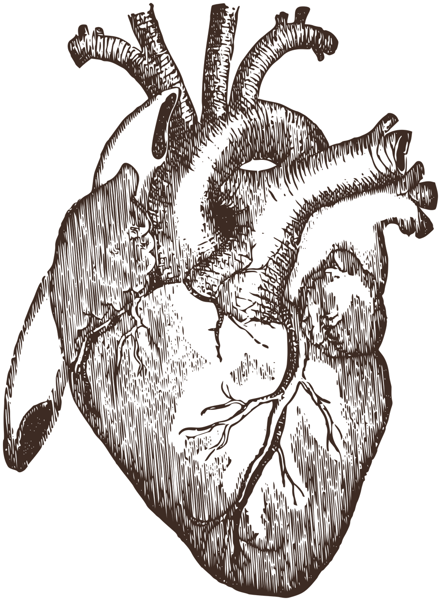

Cardiac electrophysiology
Spatial limits of
atrial mapping.
A focal source and a circulating wave can look identical along a short stretch of atrial tissue. Where the electrodes sit determines when their timing patterns diverge.

Right atrium75%
Ideal accuracy ceilingQuarter-ring coverage
2,880
Simulated runsAcross nine conditions
5
Participants with atrial fibrillation20 right-atrial placements
Interactive model
Move the electrodes.
Compare the same eight electrodes along one arm of a wave and across a collision. Move the array to see what changes.
Study results
What the maps revealed.
Online supplement
How robust are the results?
Three sensitivity analyses examine uncertainty in conduction speed, phase noise and electrogram preprocessing.
Study files
Read the study.
Spatial limits of atrial mapping for distinguishing focal activation from reentry